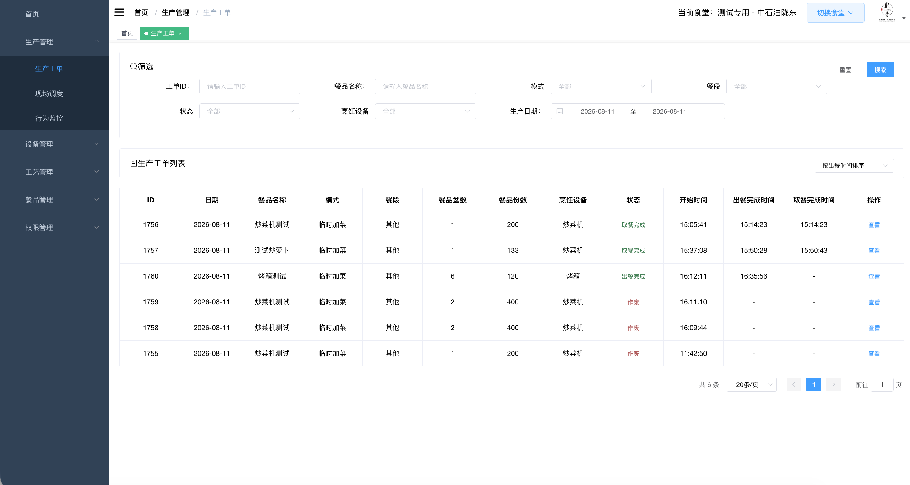
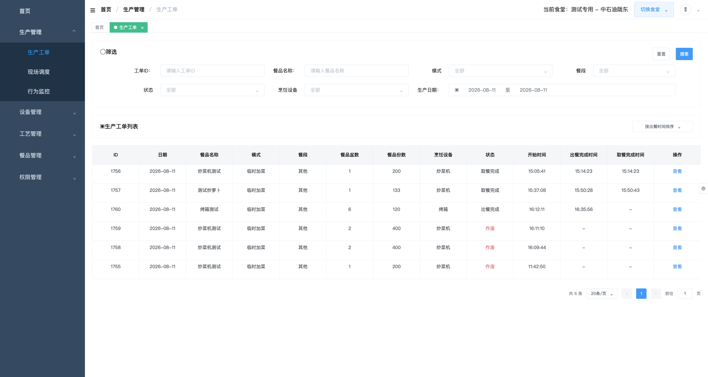
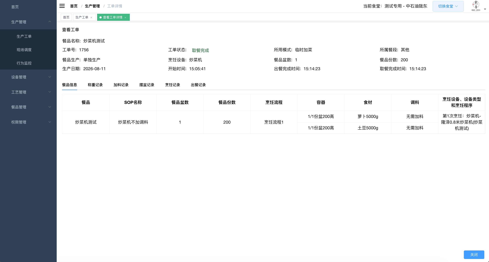
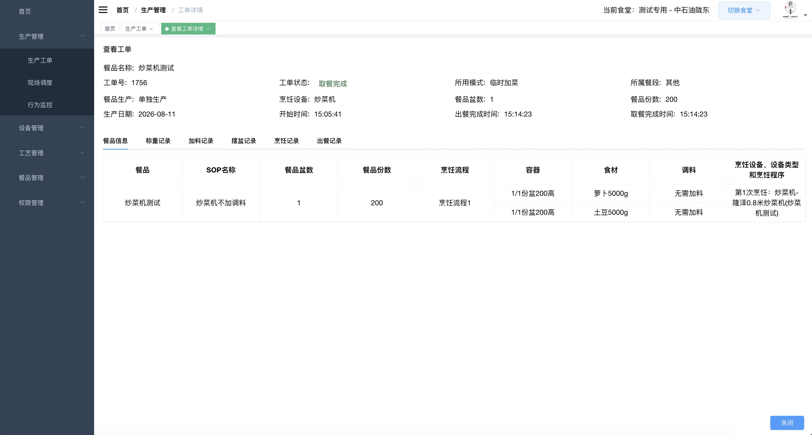
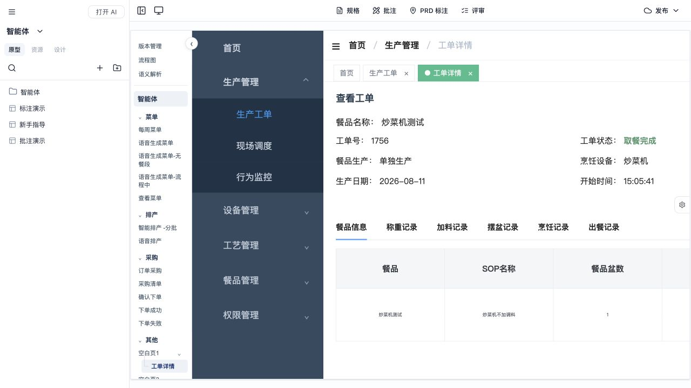
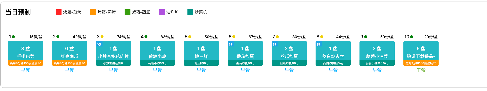
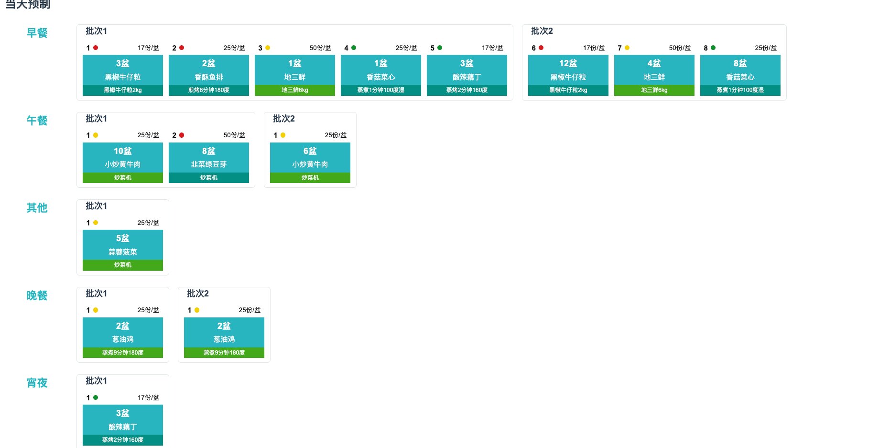
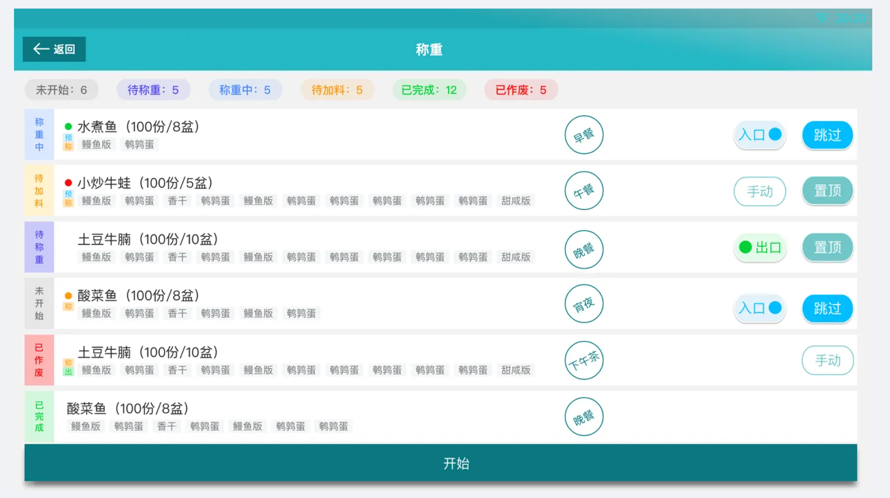
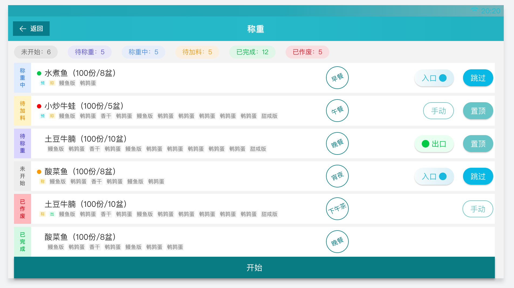
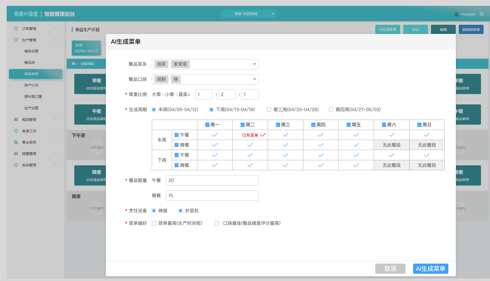

腌 制食材名称鸡腿肉块（1kg）[GT0210]食材总重量8000g
黄焖鸡
食材重量：4000g 所需调料：盐15g；鸡精15g；白胡椒粉10g；老抽30g；生抽30g；大豆油30g
操作流程：1腌制30分钟23℃ 查看操作
食材重量：4000g 所需调料：盐15g；鸡精15g；白胡椒粉10g；老抽30g；生抽30g；大豆油30g
操作流程：1腌制30分钟23℃ 查看操作
已确认并完成：标题、日期时间、工作概览、菜品列表、待办任务、烹饪提示、表格行、状态标签和时间节点均已拆为真实 HTML/CSS 元素，运行页不再引用整图。
已实施：React 不再引用 blank3-dashboard.png 作为页面；每个板块、表格、任务行、标签、数值和时间节点都可在代码或页面编辑器中独立选择与修改。已按原图补齐顶栏装饰、日期切换、任务物料与重量、预处理流程/完成情况，以及五条烹饪提示及其时长；菜品列表保留用户指定的“批次”列并扩展示例为 9 道菜。烹饪提示中每条菜名下方也增加了不遮挡内容的批次标识，批次覆盖批次1、批次2、批次3。
已完成：按 2926×1562 源图同步到“空白页1”，保持侧边栏、顶部导航、筛选区、工单表格和分页的字体、颜色、尺寸与排版。页面由静态 React/HTML/CSS 元素组成，不使用整图；用户未要求交互。

素材矩阵：汉堡菜单、搜索、日历、下拉箭头、列表、分页箭头与右上食堂标识在最终 React 中以 CSS/SVG 表达；所有表单、表格与文字已恢复为真实 HTML。页面无照片或插画，不需要生成位图。交互边界：所有控件仅呈现静态外观。

已确认并完成：按 2916×1564 源图创建“工单详情”，并在原型左侧目录树中缩进显示为“空白页1”的子节点。页面使用真实 React/HTML/CSS 元素，完整保留生产管理侧栏、面包屑与页签、工单摘要、六个详情页签、餐品信息表格和右下角关闭按钮；关闭后返回“空白页1”。

已实施：菜单、下拉、页签、表格、按钮和全部文字均为 HTML/CSS；右上食堂标识使用 CSS 表达，不依赖整屏截图。在“其他”目录分组中，“空白页1”可展开/收起并显示子节点“工单详情”；点击子节点或生产工单表格中的“查看”进入详情页，点击“关闭”返回“空白页1”。


| 页面/视图 | 页面作用 | 主要模块与内容 | 与其他页面的关系 |
|---|---|---|---|
| 每周菜单 | 按周、日期与餐段查看菜单。 | 周切换、七天菜单网格、已有菜单/添加菜单入口、语音唤醒入口。 | 已有菜单进入查看菜单；添加菜单和唤醒入口进入语音生成菜单。 |
| 语音生成菜单 | 演示菜单需求对话与生成结果。 | 助手/用户气泡、点击推进对话、生成成功后的“查看菜单”及后续新菜单确认对话。 | 查看菜单回到每周菜单。 |
| 对话修改示例 | 作为后续调整菜单对话内容的独立示例页。 | 复用“语音生成菜单”的完整对话与生成结果，进入页面后一次性展示，无需逐条点击。 | 位于“菜单”目录；当前不影响原“语音生成菜单”页面。 |
| 语音生成菜单-无餐段 | 保留其余对话，仅删除指定用户与语音助手话术并替换最终结果内容。 | 语音助手提示“当前所需排产日期中X月 X 日、X月X 日无餐段，请进入排产后台进行餐段设置后重新生成菜单”、返回按钮。 | 点击返回进入每周菜单。 |
| 查看菜单 | 查看当天午晚餐的餐品与生产数量。 | 餐品表格、数量步进器、删除、返回、加菜、去排产。 | 返回每周菜单；加菜进语音生成菜单；去排产进智能排产 -分批。 |
| 智能排产 -分批 | 查看与编辑每天的生产计划。 | 周/日切换、午晚餐卡片、编辑模式、智能排产与保存。 | 语音唤醒进入语音排产。 |
| 语音排产 | 演示排产需求对话和预生成结果。 | 助手/用户气泡、排产日期缺少菜单时的生成新菜单/去除缺失日期继续分支、排产计划确认弹窗、前往查看排产计划。 | 生成新菜单时自动带入缺少菜单的日期；继续时仅按含有菜单的日期进入后续排产；确认弹窗为当前页模态。 |
| 订单采购 | 根据周/日期查看原料需订量。 | 时间筛选、原料表、更新需订量、去采购。 | 去采购进入采购清单。 |
| 采购清单 | 调整下单数量并核对金额。 | 分类商品、数量步进器、单价、订单摘要、订单类型、送达时间。 | 去结算进确认下单；返回修改回订单采购。 |
| 确认下单 | 最终核对采购字段与总计。 | 采购明细表、实际需求量步进器、送达时间、总计/总数。 | 确认下单进入下单成功；返回修改回采购清单。 |
| 下单成功 | 反馈订单完成。 | 成功状态、预计送达时间、返回订单采购。 | 返回订单采购重新开始采购操作。 |
| 下单失败 | 反馈订单失败。 | 失败状态、失败标题、返回订单采购；不显示预计送达时间。 | 返回订单采购重新开始采购操作。 |
| 版本管理 | 智能体目录下的版本管理子页面。 | 复用 src/prototypes/untitled-3 的版本管理内容。 | 由最外层左侧“版本管理”入口进入。 |
| 流程图 | 智能体目录下的流程图子页面。 | 复用 src/prototypes/untitled-5 的业务流程图与页面流程内容。 | 由最外层左侧“流程图”入口进入。 |
| 语义解析 | 智能体目录下的语义解析子页面。 | 复用 src/prototypes/untitled-6 的语义解析表格内容。 | 由最外层左侧“语义解析”入口进入。 |
| 需求标注一览 | 集中阅读当前页面的全部需求标注。 | 仅在当前页面存在需求标注时显示“需求一览”入口和数量；点击后从右侧打开抽屉，按标注查看器加载 data.nodes 后生成的运行时序号展示标题与完整正文，可通过关闭按钮或 Esc 隐藏。 | 抽屉序号与现有蓝色标注圆点一致；切换页面时自动关闭，并按新页面重新统计。 |
| 空白页2 / 称重 | 按参考图展示称重任务总览与逐项操作。 | 状态统计、六条任务、每条任务的批次标识（批次1至批次3）、餐段章、入口/出口、跳过/置顶/手动操作、底部开始按钮。 | 本阶段仅确认 1:1 HTML 视觉稿；确认后覆盖空白页2并补齐可点击反馈。 |
本阶段只提交截图替换视觉稿：将第一张图中的批次分布内容替换为第二张图的“当天预制”横向排产内容；右上角保留现有唤醒入口。确认后再同步到 React 页面。

替换关系：第一张图是被替换内容，第二张图是最终“当天预制”内容。拟保留交互：周次、日期、编辑按钮与唤醒按钮可点击。

已确认并完成：按 1906×1068 源图复刻字体、颜色、间距和排版，现已覆盖“空白页2”。React 使用真实文本、按钮与列表结构，并保留返回、任务操作及开始按钮。
素材矩阵：返回箭头、Wi‑Fi、状态圆点、餐段章、胶囊按钮均采用 HTML/CSS/SVG；页面不存在需要切图或生成的照片、插画、Logo。最终 React 将恢复为真实文本和按钮，不引用整屏截图。


已实现：仅新增“排产后台-每周菜单”，按确认截图还原单品生产计划的七天排产主视图；现有空白页1至4、既有文字和样式均未修改。运行页使用真实 HTML/CSS 元素，不引用整屏截图。

素材矩阵：页面为后台管理界面、导航、周次切换、七天餐段网格和状态卡片，没有需要提取或生成的照片、插画或复杂位图。运行页已以 HTML/CSS 还原；点击“AI生成菜单”仍可打开可操作表单弹窗。
验收重点：固定视口 2588×1484 下，顶部栏、左侧导航、四个周次、七天日期列、宵夜/其他空餐段、早餐/午餐/晚餐卡片及周五至周日状态文字须与确认截图一致。